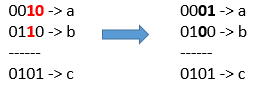

| Category | Difficulty | Likes | Dislikes |
|---|---|---|---|
| Algorithms | Medium | 2118 | 111 |
microsoft
Given 3 positives numbers a, b and c. Return the minimum flips required in some bits of a and b to make ( a OR b == c ). (bitwise OR operation).
Flip operation consists of change any single bit 1 to 0 or change the bit 0 to 1 in their binary representation.
Example 1:

Input: a = 2, b = 6, c = 5
Output: 3
Explanation: After flips a = 1 , b = 4 , c = 5 such that (a OR b == c)Example 2:
Input: a = 4, b = 2, c = 7
Output: 1Example 3:
Input: a = 1, b = 2, c = 3
Output: 0
Constraints:
1 <= a <= 10^91 <= b <= 10^91 <= c <= 10^9